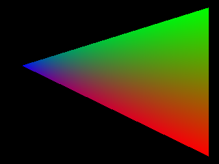
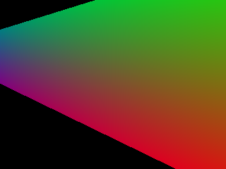
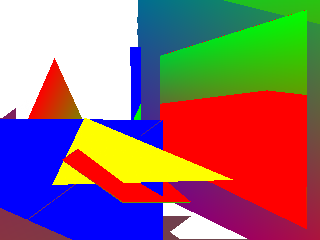

Rasterizer
Graphics Programming — Individual Project
Overview
A compact software GPU that implements a full CPU-side rendering pipeline: vertex processing, clipping, rasterization, fragment shading, and z-buffering to produce PPM image outputs.
Tech Stack
- C++
- SCons
More Screenshots



Project Details
Pipeline
Vertex shader → clip against view frustum → perspective divide / NDC → rasterize triangles → fragment shader → depth test → write color buffer
Primitives
Supports raw triangles, indexed triangles, triangle fans, and strips (handled in the render flow)
Clipping
Recursive Sutherland–Hodgman style clipping implemented in clip_triangle to clip against the six clip planes
Rasterization
NDC-to-pixel conversion, bounding-box iteration, barycentric coordinates, top-left fill rule, perspective-correct (smooth) and non-perspective interpolation, and depth testing in rasterize_triangle
Shading
Flexible shader hooks — user-provided vertex and fragment shaders with uniform/attribute interpolation rules (flat, noperspective, smooth)